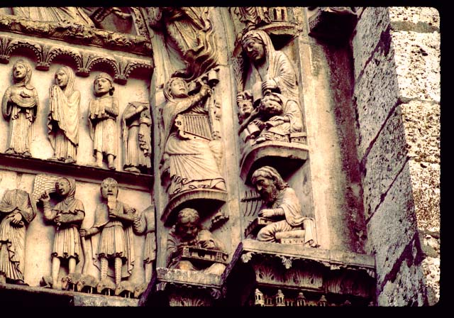

Sometime in the 980's, Fulbert, a brilliant scholar, came to Chartres from Reims, where he had been educated in the cathedral school. Fulbert taught first at a monastic school, and then, around 990, established a Cathedral School at Chartres which he ran until his death in 1028.
The Chartres Cathedral School became one of the foremost scholastic institutions of medieval Europe for the next two centuries. Fulbert's former teacher became Pope Silvester II, and Fulbert maintained this connection, which gave an international dimension to the school.
Fulbert taught medicine and astronomy, and gained an international reputation. After 1006, he was also the bishop of Chartres.
His successors included some of the most notable scholars in Europe: Ivo of Chartres (c. 1040-1117), Bernard of Chartres (1119-1124), Gilbert de la Porrée (1124-1141), and finally John of Salisbury (d. 1180).
Students at the school would typically have studied a curriculum known as the "seven liberal arts": grammar, rhetoric, and logic (the trivium), music, astronomy, arithmetic, and geometry (the quadrivium). This curriculum dates back to the sixth century. Chartres was known for its literary studies (i.e. grammar and
rhetoric),
particularly the study of classical authors such as Cicero (oratory),
Priscian,
and Donatus (grammarians), and Virgil and Lucan (Latin poets); this
focus
on classical texts was part of what we call the "twelfth century
renaissance".
The leaders of the school, who often became bishops of Chartres, were
among
the leading scholars of their day, involved in all of the intellectual
controversies of the period. Ivo of Chartres was known for his
work
on canon law; John of Salisbury wrote history as well as
philosophy.
Many of them wrote philosophical treatises which became standard
textbooks;
Chartres was one of the centers of the study of the ideas of Plato in
the
early twelfth century. From the mid-twelfth century, Aristotle
was
studied also, newly arrived from translation from Arabic, although by
then,
the School of Chartres' day was past; no university was founded there,
and students went rather to nearby Paris to study philosophy.
|
 (Chartres, west front, sculpture around south doorway, showing, in the center of this image, two of the seven liberal arts, with scholars from antiquity who represent them: Music (the woman with the lyre) above Pythagoras, and Grammar (teaching two students) above Donatus or Priscian) |